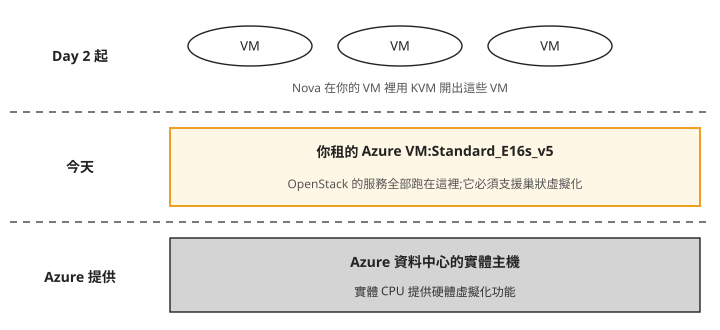
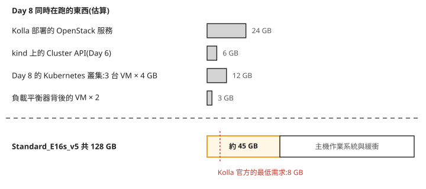
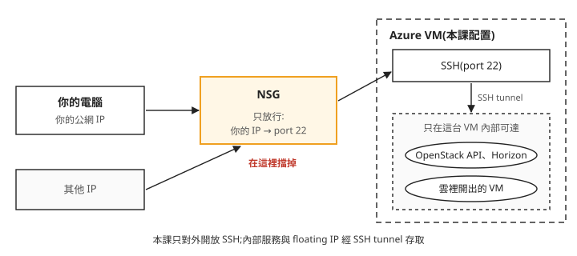

Day 0: 準備 Azure Lab 環境——巢狀虛擬化、VM 規格與成本控管¶
這門課要在一台機器上蓋出整朵 OpenStack 雲,再從這朵雲裡開 VM。手邊多半沒有閒置的實體伺服器,所以我們在 Azure 租一台 VM 當實驗室。這台 VM 跟平常開來跑網站的不一樣:它裡面還要再開 VM,記憶體要撐住之後每一天加上去的服務,而且要連續用好幾週。規格挑錯的話,問題要到 Day 1 部署或 Day 2 開第一台 VM 時才會出現。
這一章用 Azure CLI 把這台 VM 開起來,並在開機當天設好每晚自動關機和預算警報。讀完之後,拿到一台候選的 VM,你能判斷它能不能當這門課的實驗室:支不支援巢狀虛擬化、記憶體夠不夠,以及關機之後還有哪些東西在計費。
一台 VM 裡還要再開 VM¶
OpenStack 裡負責開 VM 的服務叫 Nova。Nova 開 VM 時用的是 KVM:Linux 核心內建的虛擬化功能,讓 VM 直接使用 CPU 的硬體虛擬化指令,速度接近實體機。在實體伺服器上,CPU 本來就有這些指令;可是我們的 OpenStack 是裝在一台 Azure VM 上,這台 VM 看到的 CPU 是 Azure 虛擬出來的,硬體虛擬化指令有沒有一起交給它,要看機型。
把這三層畫出來,由下往上是誰在誰裡面:

照著圖看:
- 中間那層是今天要租的機器。 之後在 OpenStack 開的每一台 VM,都跑在它裡面,共用它的 CPU 和記憶體。
- 最上層能不能用 KVM,取決於中間那層。 在一台 VM 裡面再用硬體虛擬化開 VM,叫做巢狀虛擬化(nested virtualization),Azure 只有部分機型支援。機型不支援的話,Kolla 預設的
nova_compute_virt_type: "kvm"不會自動退回其他方式,要在 Day 1 的globals.yml手動改成qemu,讓 Nova 用 QEMU 的純軟體模擬開 VM,速度會慢很多。
這門課用 Standard_E16s_v5:Azure 官方的 Esv5 系列規格頁把巢狀虛擬化列為支援。步驟 7 會在 VM 上用 kvm-ok 實際確認一次。
記憶體要算到 Day 8¶
Kolla-Ansible(Day 1 用來部署 OpenStack 的工具)官方寫的主機最低需求是 8 GB 記憶體,那是只裝核心服務的情況。這門課會一路加上負載平衡、金鑰管理等服務,到了 Day 8 還要在雲裡開一整座 Kubernetes 叢集。記憶體要以 Day 8 同時在跑的東西來估:

第二項的 Cluster API 是 Day 6 起用來建立 Kubernetes 叢集的程式,跑在 kind(把一座小型 Kubernetes 裝在 Docker 容器裡的工具)上。上半部四項加起來約 45 GB,是 Kolla 官方最低需求的五倍多。Standard_E16s_v5 有 16 vCPU、128 GB 記憶體,扣掉這 45 GB,還有八十多 GB 留給主機的作業系統和緩衝。圖上的數字都是估算,估錯一些也還有空間。
開始之前¶
以下指令在你自己電腦的終端機上執行(以 macOS 或 Linux 為例),需要裝好 Azure CLI 並用 az login 登入。開 VM 之前先確認三件事:要用的訂閱存在、SSH 金鑰存在、目標區域的配額夠開 16 核。配額(quota)是 Azure 對每個訂閱、每個區域、每個 VM 系列設的 vCPU 上限,用量加上這台的 16 核超過上限,開 VM 就會失敗,要先到 Azure 入口網站申請提高:
az account list -o table # 你要用的訂閱在清單裡
ls ~/.ssh/<ssh-key>.pub # SSH 公鑰存在(沒有就先 ssh-keygen)
az vm list-usage -l japaneast -o table | grep -i esv5 # ESv5 家族配額 ≥ 16(不足要先申請)
接下來的指令裡有三個值要換成你自己的:<resource-group> 是步驟 1 要建立的 resource group 名稱,取一個認得出這個 lab 的名字即可,例如 openstack-lab-rg;<your-name> 是你的名字,步驟 1 會把它寫進 tag;<ssh-key> 是 ~/.ssh/ 底下那把金鑰的檔名,公鑰是同名加上 .pub。區域 japaneast 和 VM 名稱 openstack-lab 也可以換,只是之後每一步都要跟著換,包括後面章節開機用的 az vm start。換區域的話,先用上面第三行確認那一區有 Esv5 系列的配額。<subscription-id> 換成 az account list 列出的訂閱 ID。
步驟 1:建立 resource group 並加上 tags¶
resource group 是 Azure 裝一組相關資源的容器,VM、磁碟、網路都放在裡面,不用時可以整組刪掉。建立時順便加上 tags:附在資源上的 key=value 標籤。Azure 的成本分析可以依 tag 分組,之後想知道這個 lab 花了多少,篩 purpose=lab 就好:
az group create -n <resource-group> -l japaneast \
--subscription <subscription-id> \
--tags purpose=lab owner=<your-name> sprint=3
步驟 2:允許這個訂閱使用 Standard security type¶
Azure VM 有一個設定叫 security type。新建的 Gen2 VM(Azure 第二代 VM,用 UEFI 開機,Ubuntu 24.04 映像檔就是這一代)預設是 Trusted Launch,它會開啟 Secure Boot(開機時只允許有簽章的作業系統和驅動程式載入)和虛擬 TPM。另一個選項 Standard 不開這些功能。
這個 lab 用不到 Secure Boot 和虛擬 TPM,本課也只在 Standard 上確認過巢狀虛擬化可用,所以步驟 3 會指定 --security-type Standard。Azure 有些功能要先在訂閱上個別開啟才能用,這種開關叫 feature;UseStandardSecurityType 就是其中一個,新訂閱要先註冊它,才准建立 Standard 的 VM。provider 則是 Azure 上提供某一類資源的服務,VM 由 Microsoft.Compute 提供,feature 註冊完要重新註冊 provider,設定才會生效。這一步要在開 VM 之前做:
az feature register --namespace Microsoft.Compute --name UseStandardSecurityType \
--subscription <subscription-id>
az feature show --namespace Microsoft.Compute --name UseStandardSecurityType \
--subscription <subscription-id> --query properties.state -o tsv
az provider register -n Microsoft.Compute \
--subscription <subscription-id> --wait
az feature register 送出註冊後,要幾分鐘才會完成。用 az feature show 查狀態,等它顯示 Registered,再執行最後的 az provider register。跳過這一步,步驟 3 會被拒絕,錯誤訊息見疑難排解:--security-type Standard 被 Azure 拒絕。
步驟 3:開 VM¶
從這一步開始計費。az vm create 除了 VM 本身,還會一起建立虛擬網路、公網 IP,以及一個名叫 openstack-labNSG 的防火牆規則組(步驟 4 會用到):
az vm create \
--subscription <subscription-id> \
-g <resource-group> -n openstack-lab \
--image Ubuntu2404 --size Standard_E16s_v5 \
--security-type Standard \
--admin-username azureuser --ssh-key-values ~/.ssh/<ssh-key>.pub \
--public-ip-sku Standard \
--os-disk-size-gb 128 --data-disk-sizes-gb 256 \
--tags purpose=lab owner=<your-name> sprint=3
這台 VM 會有兩顆磁碟:128 GB 的作業系統碟,和一顆 256 GB、什麼都沒裝的資料碟。資料碟今天不要格式化,Day 3 會把它整顆交給 OpenStack 的儲存服務 Cinder 使用。Esv5 系列沒有本機暫存碟,所以 VM 裡看到的第二顆磁碟一定是這顆資料碟。
指令跑完會印出一段 JSON,記下裡面的 publicIpAddress(公網 IP,SSH 連線用)和 privateIpAddress(VM 在 Azure 虛擬網路裡的位址,Day 1 設定 OpenStack 時會用到)。--public-ip-sku Standard 建立的公網 IP 是固定的,之後每天關機再開機,位址都不會變。
SSH 是進這台 VM 的唯一入口¶
VM 開好之後,你從自己的電腦能連到的只有它的 SSH。原因在 Azure 的虛擬網路:它不轉送廣播,也會擋掉來源位址不屬於這台 VM 的封包。之後 OpenStack 在這台 VM 裡建的網路,外面連不進來:雲裡的 VM 拿到的 floating IP(OpenStack 配給 VM、讓它能被外部連線的位址)只在這台 VM 內部有效。雲裡的 VM 往外連可以經過 NAT(Day 2 會設定),但反方向不行。要從自己的電腦打開 OpenStack 的網頁介面 Horizon(Day 1 會裝),或連到雲裡的 VM,一律透過 SSH 轉送(SSH tunnel)。Day 1 設定 OpenStack 網路時會再遇到這個限制。
既然 SSH 是唯一的入口,就要管好誰能連。az vm create 建立的 NSG(network security group,Azure 的防火牆規則組)預設允許任何來源連 SSH。這一步把它改成只允許你自己的公網 IP:

我們可以從圖上看到兩件事:NSG 是外面到 VM 之間唯一的檢查點,而雲裡的東西全部在右邊的虛線框內,外面只能經由 SSH 進去。
步驟 4:NSG 只讓你的 IP 連 SSH¶
curl -s ifconfig.me 會回傳你現在對外的公網 IP。NSG 的名稱是 VM 名稱加上 NSG,規則名稱 default-allow-ssh 是 az vm create 預設建立的:
MY_IP=$(curl -s ifconfig.me)
az network nsg rule update \
--subscription <subscription-id> \
-g <resource-group> --nsg-name openstack-labNSG \
-n default-allow-ssh --source-address-prefixes "$MY_IP/32"
換了網路(例如從家裡換到公司),你的公網 IP 會跟著變,SSH 就會連不上。這時重跑這一步即可。
步驟 5:每晚自動關機¶
這台 VM 要用好幾週,忘記關機的時數會一直累積成費用。az vm auto-shutdown 設定每天固定時間關機。時間以 UTC 計算,1400 就是台北時間 22:00:
az vm auto-shutdown \
--subscription <subscription-id> \
-g <resource-group> -n openstack-lab --time 1400 # UTC → 台北 22:00
自動關機做的是 deallocate:VM 停止,並釋放它在 Azure 實體主機上佔用的資源。deallocate 之後不再收 VM 的運算費用,但磁碟和網路資源照樣計費,所以兩顆磁碟和公網 IP 每天 24 小時都在收錢。
自動關機不會自動開機。每天開始操作前,先在自己的電腦上把 VM 開起來:
因為這台 VM 每天都會重開,之後幾章會遇到一些「開機後要自動重建」的設定,例如 Day 1 的 dummy 網卡(Day 1 會建的一張不接任何線路的虛擬網卡)、Day 2 的對外網路修正,原因都在這裡。
步驟 6:預算警報¶
自動關機防的是忘記關機;預算警報(budget alert)防的是另一種情況:費用不知不覺超出預期。它在 Azure 上設一個每月預算,花費達到門檻時寄信通知。這裡用 Azure 的 Budgets REST API,透過 az rest 直接呼叫,在這個 resource group 上設兩道通知:
actual80:本月實際花費超過預算的 80%。forecast100:Azure 依目前的用量預測,月底會超過預算的 100%。
az rest --method PUT \
--url "https://management.azure.com/subscriptions/<subscription-id>/resourceGroups/<resource-group>/providers/Microsoft.Consumption/budgets/sprint3-lab-budget?api-version=2023-05-01" \
--body '{"properties":{"category":"Cost","amount":150,"timeGrain":"Monthly",
"timePeriod":{"startDate":"2026-07-01T00:00:00Z","endDate":"2026-12-31T00:00:00Z"},
"notifications":{
"actual80":{"enabled":true,"operator":"GreaterThan","threshold":80,"contactEmails":["you@example.com"],"thresholdType":"Actual"},
"forecast100":{"enabled":true,"operator":"GreaterThan","threshold":100,"contactEmails":["you@example.com"],"thresholdType":"Forecasted"}}}}'
照打之前要改四個地方:amount 改成你自己的每月預算(金額以帳單帳戶的幣別計算),contactEmails 改成你的信箱,startDate 改成本月 1 日(Azure 要求月預算的起始日是某個月的第一天),endDate 改成你預計結束 lab 的日子。
預算警報只會寄信,不會停掉任何資源,收到信之後要自己決定關機或刪除。Azure 的官方教學也列出 az consumption budget create-with-rg 這個指令,同樣可以帶通知設定,本課沒有用它驗證過。
步驟 7:確認 VM 可以開始用¶
SSH 進 VM,把 203.0.113.10 換成步驟 3 記下的公網 IP。kvm-ok 是 cpu-checker 套件裡的小工具,檢查這台機器能不能用 KVM:
ssh -i ~/.ssh/<ssh-key> azureuser@203.0.113.10
sudo apt-get update -qq && sudo apt-get install -y cpu-checker
sudo kvm-ok
lsblk -o NAME,SIZE,TYPE,MOUNTPOINT
看兩個地方:
kvm-ok最後一行要是KVM acceleration can be used。這代表巢狀虛擬化可用,Nova 之後能用 KVM 開 VM。如果不是這一行,回頭確認步驟 3 的--size。lsblk裡,sda是 128G 的作業系統碟,掛在/;sdb是 256G 的資料碟,沒有分割區,也沒有掛載點。保持這樣,Day 3 才會用到它。
再確認 CPU、記憶體和作業系統版本:
nproc 應該是 16;free -h 的總記憶體約 125Gi,比 128 GB 少一點是正常的;lsb_release -d 顯示 Ubuntu 24.04 LTS。
疑難排解¶
--security-type Standard 被 Azure 拒絕¶
症狀:az vm create --security-type Standard 直接失敗,錯誤訊息是 BadRequest: The value 'Standard' is not available for property 'securityType' until the feature Microsoft.Compute/UseStandardSecurityType is registered。
原因:這個訂閱還沒註冊 UseStandardSecurityType,只能建立 Trusted Launch 的 VM。回到步驟 2 補跑,再重試 az vm create。
想一想¶
- 一位同學為了省錢,挑了一台記憶體夠大、但規格頁沒有列出支援巢狀虛擬化的機型。他會在這一章的哪一步第一次發現不對?如果他堅持用這台機器,Nova 開 VM 只剩什麼方式?
- 週五晚上 VM 自動關機,整個週末你都沒開機。這兩天裡,這個 resource group 還有哪些東西在計費?如果這個月累計的花費在週末超過預算的 80%,預算警報會替你做什麼?
- 你帶筆電到咖啡店,SSH 連不上 VM,同一時間同事從辦公室卻連得上。你會先檢查哪一步的設定?
小結¶
這一章開的 VM 承載之後所有章節的內容:OpenStack 的服務和它開出的 VM 都跑在裡面,所以它必須支援巢狀虛擬化,記憶體要以 Day 8 同時在跑的東西來估。Azure 的虛擬網路讓外面連不進雲裡的東西,只能經由 SSH 進去,所以 NSG 只放行你自己的 IP;換了網路連不上時,重跑步驟 4。費用方面,自動關機只停掉運算費用,磁碟和公網 IP 照樣計費,預算警報也只寄信、不停機。這台 VM 每天都會重開,之後章節裡凡是開機後要自動重建的設定,都是因為這件事。
延伸閱讀¶
想再深入,可以從這幾份開始:
- Azure Esv5 系列規格 —— 各尺寸的 vCPU 與記憶體,以及巢狀虛擬化、本機暫存碟等功能支援表;挑其他機型時,用同樣的欄位對照。
- Azure Trusted Launch —— Trusted Launch 包含哪些功能、什麼情況下是預設值,對應步驟 2。
- Azure VM 的狀態與計費 —— Stopped 和 Deallocated 的差別、哪些狀態不收運算費用,以及磁碟與網路為什麼仍然計費。
- 用 Azure 建立與管理預算 —— 實際花費與預測花費兩種通知、月預算起始日的規定,以及入口網站、CLI 等其他建立方式。
- Kolla-Ansible Quick Start(2025.1) —— 開頭的主機最低需求,可以跟本章的記憶體估算對照;Day 1 會照這份文件部署。
下一步¶
一台支援巢狀虛擬化的空白 VM 已經就緒。Day 1 我們安裝部署工具 Kolla-Ansible,把 OpenStack 的核心服務部到這台 VM 上,讓它變成一朵能登入的雲。
如果你想先了解為什麼選 Kolla-Ansible、之前兩條路線怎麼失敗,可以先讀前兩次嘗試;想直接動手也可以,Day 1 開頭會交代需要的背景。